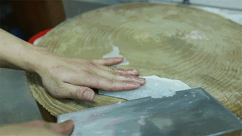

Home
Recipes
Techniques
Picture demonstration
GIF demonstration

Video demonstration
Spicy Fried Fish
Step 1: Slice the fish into moderate sized fish fillets
Firstly, cut off the head.
Secondly, slice open the belly to remove organs.
Thirdly, skin the fish to remove skin and scales.
Finally, run the knife from the tail of the fish to the head on the fish bone.
Technique: Slicing
Demo:
Picture
GIF
Video
Back
Next step